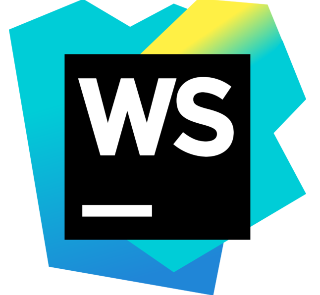

Webstorm
Concepts
Using AFS how to do what from the following?
Setting up & connecting through a terminal to AFS
In Webstorm, to connect through a terminal go to the top bar and select 'Tools' and then at the bottom of the menu click on 'start SSH session'. After that, click 'Edit credentials to input the host's and your user's information. In the 'Host' bar type 'afs1.njit.edu' (You could enter any number after afs between 1 and 22 because of 22 ports), then input your UCID Username and Password. After pressing OK, your terminal will be connected to AFS.